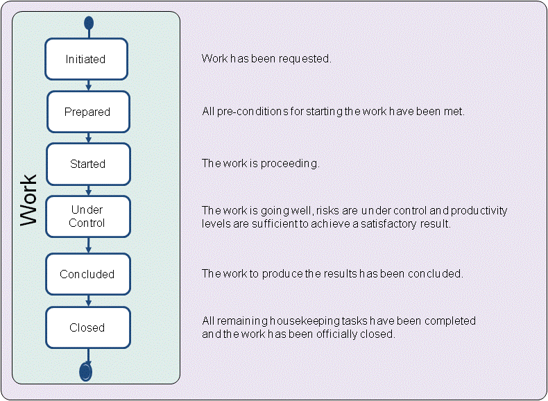

Essence Kernel
Work: Activity involving mental or physical effort done in order to achieve a result.
In the context of software engineering, work is everything that the team does to meet the goals of producing a software system matching the requirement and addressing the opportunity presented by the stakeholders. The work is guided by the practices that make up the team’s way-of-working.
The ability of team members to co-ordinate, organize, estimate, complete, and share their work has a profound effect on meeting their commitments and delivering value to their stakeholders. Team members need to understand how to carry out their work, and how to recognize when the work is going well.
During the development of a software system the work progresses through several state changes. As presented in the figure below, they are initiated, prepared, started, under control, concluded, and closed. These states provide points of stability in the progression of the work indicating when the work is initiated and prepared, when the team is assembled and the work is started and brought under control, when the results are achieved and the development work is concluded, and finally, when the work itself is closed and all loose ends and outstanding work items are addressed.

The work is first initiated. This implies that someone defines the desired result, and makes sure that the conditions are right for the work to be performed. If the work is not successfully initiated, it will never be progressed and assigned to a team. As the work is prepared, commitments are made, funding and resources are secured, the work is organized, appropriate governance policies and procedures are put in place, and priorities, constraints and impediments are understood. Once all the pre-conditions for starting the work are addressed, the team gets the go-ahead to get the real work started. The team starts to complete the individual work items, and builds evidence showing that the work is under control.
There are many practices that can be used to help organize and co-ordinate the work including SCRUM, Kanban, PMBoK, PRINCE2, Task Boards and many, many more. These typically involve breaking the work down into:
The level, depth and extent of the work breakdown depends on the style and complexity of the work and on the specific practices the team selects to help them co-ordinate, monitor, control and undertake the work.
If the team has their work under control then there will be concrete evidence that:
Typically, once the work has been concluded and the results have been accepted by the relevant stakeholders, there remain some final housekeeping and wrap up activities to be completed before the work itself can be closed.
If, for any reason, the work is not going well, then it may be halted, abandoned or reverted to a previous state. If the work is abandoned once it is started, it should still be properly closed even though it has not managed to pass through the concluded state.
Understanding the current and desired state of the work can help the team to balance their activities, make the correct investment decisions, nurture the work that is going well, and help or cancel the work that is going badly.
The work has been requested.
The alpha is in this state when:
All pre-conditions for starting the work have been met.
The alpha is in this state when:
The work is proceeding.
The alpha is in this state when:
The work is going well, risks are under control, and productivity levels are sufficient to achieve a satisfactory result.
The alpha is in this state when:
The work to produce the results has been concluded.
The alpha is in this state when:
All remaining housekeeping tasks have been completed and the work has been officially closed.
The alpha is in this state when:
N/A
N/A
Copyright © 2012 Ivar Jacobson International AB, Florida Atlantic University, Fujitsu, Impetus, International Business Machines Corporation, KTH Royal Institute of Technology, Metamaxim Ltd., PEM Systems, Stiftelsen SINTEF, University of Duisburg-Essen. , ver. 1.0.3